Q-Qプロット
Q-Q-Plot
サマリー
Q-Qプロットは、データセットが与えられた分布に従うかどうかを検定する手法です。 Q-QプロットのX軸には独立した値が、Y軸には従属する値をもちます。すべてのデータポイントが参照線に近い場合、データセットは与えられた分布に従うものと結論付けできます。
- 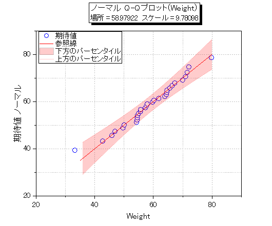
必要なOriginのバージョン:Origin 2016 SR0
学習する項目
- Q-Qプロットを作成する
- 外れ値と疑われる値をマスクし、Q-Qプロットを再度計算する
Q-Qプロットを作成する
Origin Centralにある「このグラフ」を参照してください。(ヘルプ: ラーニングセンター メニューを選択、または
キーボードのF11 キーを押して、グラフサンプル：Statistical Graphsを選択します)
 ボタンをクリックして<Origin
EXE folder>\Samples\Graphing\ にあるQ-Q plot.dat をインポートします。
ボタンをクリックして<Origin
EXE folder>\Samples\Graphing\ にあるQ-Q plot.dat をインポートします。
- QQplotのワークブックでQ-Q plotのワークシートをアクティブにします。B列を選択して右クリックし、作図：統計グラフ：Q-Q図
を選択します。 開いたPlotting:plot_probダイアログでスコアー法をBenardに設定します。
OKをクリックします。
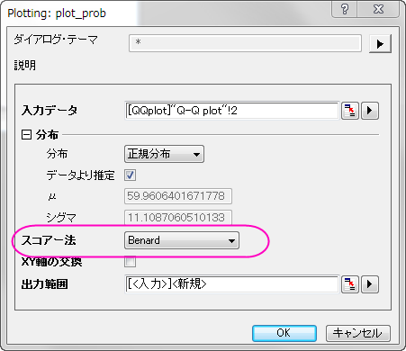
- 下方のパーセンタイルでダブルクリックして、作図の詳細（プロット属性）ダイアログを開きます。グラフの線のタブで、色を赤に、透過率を80%に設定します。
曲線以下の塗りつぶしのチェックボックスにチェックを入れて、ドロップダウンリストから次のデータプロットまで塗りつぶす
- 1色を選択します。
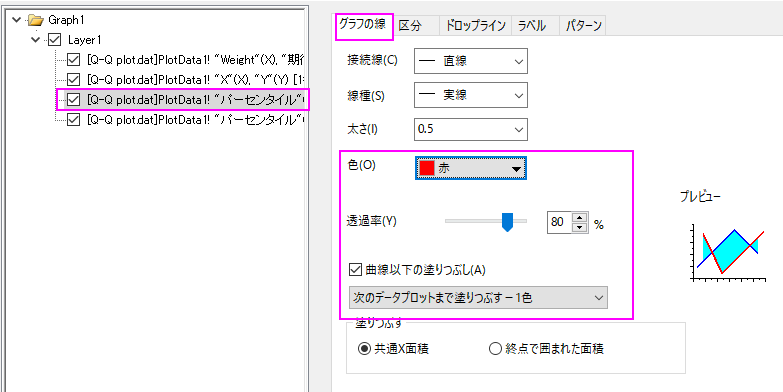
- パターンタブを開き、塗りつぶしを赤にします。線の透過率に準じるのチェックボックスにチェックが入っていることを確認します。
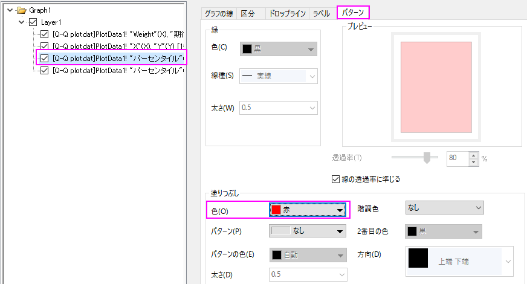
- 上部のパーセンタイルの線のグラフの線タブを開き、色を赤、透過率を80%に設定します。OKをクリックしてこの設定を適用して、ダイアログを閉じます。
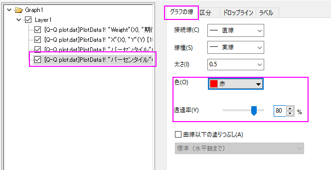
グラフは、下図のようになります。
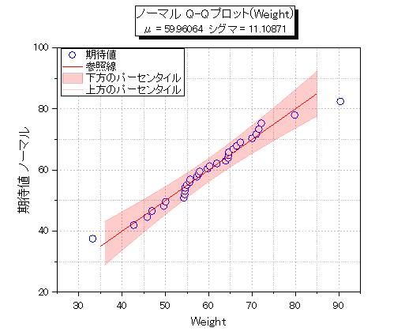
外れ値をマスクする
- 緑色のカギマークをクリックして、再計算モードが自動になっていることを確認します。
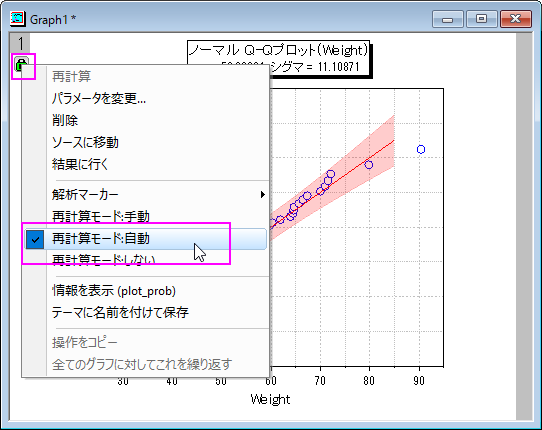
- データリーダツールをクリックしてQ-Q図の疑わしいプロットをクリックして選択します。
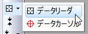
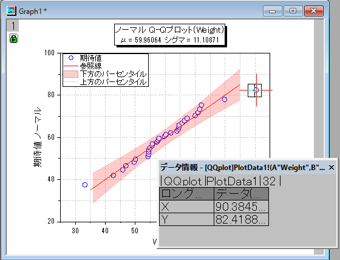
データ情報ウィンドウに外れ値の座標が表示されます。
- Q-Q plotシートをアクティブにします。
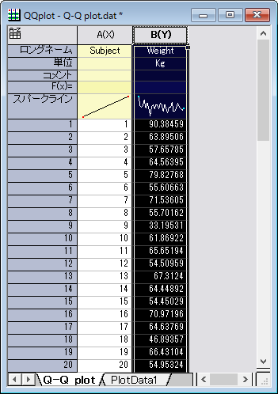
- メインメニューのウィンドウ：コマンドウィンドウを選択して下記スクリプトを実行します。
colmask cond:=eq val:=x;
Q-Q plot シートの外れ値データが赤く表示され、グラフからは非表示になったことがわかります。
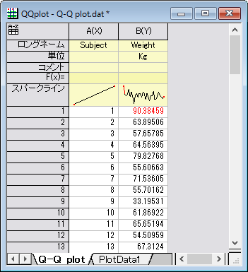